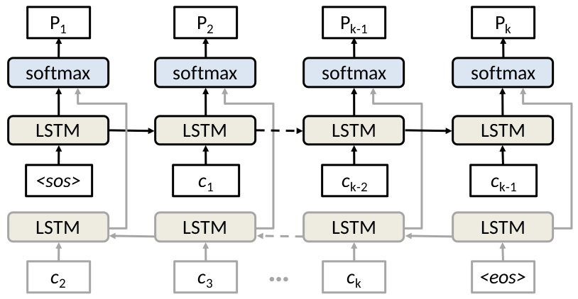

Network Language Models¶
simple_lm¶
Simple language model code for network modeling.
File name convention:¶
- lr: learnrate for gradient descent
- nl: number of stacked lstm layers
- hs: size of hidden layers (presumes all layers have same number of hidden units)
- mb: Size of mini-batch
- bc: max bad count for early stopping
- em: Size of token embeddings
- rs: Random seed for reproducible results
stdout¶
For each mini-batch the following is printed to standard output
batchsize line_number second status filename index current_loss
Where:
- batchsize: The size of the mini-batch
- line_number: Line number from original auth.txt file (may be off by 1)
- second: The second of the first event in the mini-batch
- status: Whether the model is updating or merely forward propagating
- filename: The current file being processed
- index: The number of samples processed to date
- current_loss: The average loss over the mini-batch
File output:¶
batch_num line second day user red loss
Where:
- batch_num: The mini-batch this event was a part of
- line: Line number from original auth.txt file (may be off by 1)
- second: The second which the event occurred on
- day: The day the event occurred on
- user: The user who performed the event
- red: Whether this event was a labeled red team activity (1 for red team activity 0 otherwise)
- loss: The anomaly score for this event
Example calls¶
Simple character based language model.
python safekit/models/simple_lm.py results/ safekit/features/specs/lm/lanl_char_config.json data_examples/lanl/lm_feats/raw_day_split/ -test -skipsos -jagged
Note
The output results will be printed to /tmp/lanl_result/ and then moved to results/ upon completion to avoid experiment slowdown of constant network traffic when using a distributed file system.
Input Data¶
The format of the input makes the following assumptions:
Input files are together in datafolder, one file for each day.
Input files are plain text files with one line of integers per log line representing meta data and the tokens from log text.
Input format for fixed length sequences
line_nums second day user red logtokenid1 .... logtokenid_SentenceLen
Zero paded Input format for jagged sequences
line_nums second day user red SentenceLen logtokenid1 .... logtokenid_SentenceLen 0 0 .... 0
-
simple_lm.return_parser()[source]¶ Defines and returns argparse ArgumentParser object.
Returns: ArgumentParser
-
simple_lm.write_results(datadict, pointloss, outfile, batch)[source]¶ Writes loss for each datapoint, along with meta-data to file.
Parameters: - datadict – Dictionary of data names (str) keys to numpy matrix values for this mini-batch.
- pointloss – MB X 1 numpy array
- outfile – Where to write results.
- batch – The mini-batch number for these events.
Returns:
Command line¶
usage: simple_lm [-h] [-learnrate LEARNRATE]
[-lm_layers LM_LAYERS [LM_LAYERS ...]]
[-context_layers CONTEXT_LAYERS [CONTEXT_LAYERS ...]]
[-numsteps NUMSTEPS] [-mb MB] [-debug]
[-maxbadcount MAXBADCOUNT] [-em EM] [-encoding ENCODING]
[-random_seed RANDOM_SEED] [-jagged] [-skipsos] [-bidir]
[-test] [-verbose VERBOSE] [-delimiter DELIMITER]
[-cell_type CELL_TYPE]
results_folder config datafolder
- Positional arguments:
results_folder The folder to print results to. config The data spec. datafolder The folder where the data is stored. - Options:
-learnrate=0.001 Step size for gradient descent. -lm_layers=[10] A list of hidden layer sizes. -context_layers=[10] decoy arg. -numsteps=10 decoy arg. -mb=128 The mini batch size for stochastic gradient descent. -debug=False Use this flag to print feed dictionary contents and dimensions. -maxbadcount=20 Threshold for early stopping. -em=20 Size of embeddings for categorical features. -encoding Can be “oct”, “raw” or “word” -random_seed=5 Random seed for reproducible experiments. -jagged=False Whether using sequences of variable length (Input shouldbe zero-padded to max_sequence_length. -skipsos=False Whether to skip a start of sentence token. -bidir=False Whether to use bidirectional lstm for lower tier. -test=False Whether to run on a subset of the data (5000 lines from days 1,2,3) or the entire set. -verbose=1 Whether to print loss during training. -delimiter=, Delimiter for input text file. You should be using ‘ ‘ for the dayshuffled cert. -cell_type=lstm Can be either “lstm”, “ident_ran”, or “ran”
tiered_lm¶

This is a two tiered language model for anomaly detection, where the second tier LSTM (log line level) takes the concatenation of the average sentence vector and final hidden state from the lower tier (token level) LSTM as input, creating a new context vector and hidden state for the given user.
Example Command for running a model configuration¶
Raw (character token) tiered model (The jagged parameter lets the model know there are variable length sequences)
python safekit/models/tiered_lm.py results/ safekit/features/specs/lm/lanl_char_config.json data_examples/lanl/lm_feats/raw_day_split/ -test -skipsos -jagged
Note
The output results will be printed to /tmp/lanl_result/ and then moved to results/ upon completion to avoid experiment slowdown of constant network traffic.
File name convention:¶
- em: embedding size for token embedding
- ns: number of loglines per user per mini-batch for trunctated back propagation through time
- mb: Minibatch size (mini-batch over users)
- lr: learnrate (step size for gradient descent)
- cl: context layers (number of hidden layers for top level (log line level) context rnn)
- lml: language model layers (number of hidden layers for the bottom level, token level, rnn)
- rs: random seed for reproducible results
stdout¶
For each mini-batch the following is printed to standard output
batchsize line_number second status filename index current_loss
Where:
- batchsize: The size of the mini-batch
- line_number: Line number from original auth.txt file (may be off by 1)
- second: The second of the first event in the mini-batch
- status: Whether the model is updating or merely forward propagating
- filename: The current file being processed
- index: The number of samples processed to date
- current_loss: The average loss over the mini-batch
File output¶
batch_num line second day user red loss
Where:
- batch_num: The mini-batch this event was a part of
- line: Line number from original auth.txt file (may be off by 1)
- second: The second which the event occurred on
- day: The day the event occurred on
- user: The user who performed the event
- red: Whether this event was a labeled red team activity (1 for red team activity 0 otherwise)
- loss: The anomaly score for this event
Note
The runtime of the experiment is also printed to a file called runtimes.txt at the end of training
Input Data¶
The format of the input makes the following assumptions:
Input files are together in datafolder, one file for each day.
Input files are plain text files with one line of integers per log line representing meta data and the tokens from log text.
Input format for fixed length sequences
line_nums second day user red logtokenid1 .... logtokenid_SentenceLen
Zero paded Input format for jagged sequences
line_nums second day user red SentenceLen logtokenid1 .... logtokenid_SentenceLen 0 0 .... 0
-
class
tiered_lm.ContextRNN(layers, initial_state, cell=<class 'tensorflow.python.ops.rnn_cell_impl.LSTMCell'>)[source]¶ Log line level LSTM cell that keeps track of it’s last lstm state tuple
Parameters: - layers – List of hidden layer sizes.
- initial_state – List of numlayers lists of tensors (cell_state, hidden_state), or List of lstm state tuples (which are named tuples of tensors (c=cell_state, h=hidden_state)
- cell – Type of rnn cell to use.
-
tiered_lm.tiered_lm(token_set_size, embedding_size, ph_dict, context_layers, lm_layers, numsteps, bidir=False, jagged=False)[source]¶ Parameters: - token_set_size – (int) Number of unique tokens in token set
- embedding_size – (int) Dimensionality of token embeddings
- ph_dict – dictionary of tensorflow placeholders and lists of tensorflow placeholders
- context_layers – List of hidden layer sizes for stacked context LSTM
- lm_layers – list of hidden layer sizes for stacked sentence LSTM
- numsteps – How many steps (log lines) to unroll the upper tier RNN
- bidir – Whether to use bidirectional LSTM for lower tier model
- jagged – Whether or not variable length sequences are used
Returns: total_loss (scalar tensor), context_vector (tensor), line_loss_matrix (tensor), Losses for each line in mini-batch context_state (LSTMStateTuple) Final state of upper tier model
Command line¶
usage: tiered_lm [-h] [-encoding ENCODING] [-em EM] [-numsteps NUMSTEPS]
[-mb MB] [-learnrate LEARNRATE]
[-context_layers CONTEXT_LAYERS [CONTEXT_LAYERS ...]]
[-lm_layers LM_LAYERS [LM_LAYERS ...]] [-debug]
[-random_seed RANDOM_SEED] [-jagged] [-skipsos] [-bidir]
[-test] [-verbose VERBOSE] [-delimiter DELIMITER]
[-cell_type CELL_TYPE] [-upper_cell_type UPPER_CELL_TYPE]
results_folder config datafolder
- Positional arguments:
results_folder The folder to print results to. config The data spec. datafolder File with token features - Options:
-encoding Can be “oct”, “raw” or “word” -em=5 Dimension of token embeddings -numsteps=3 length of unrolled context_rnn, number of log lines per user per train step -mb=64 Number of users in mini-batch. -learnrate=0.001 Step size for gradient descent. -context_layers=[10] List of hidden layer sizes for context lstm. -lm_layers=[5] List of hidden layer sizes for token lstm. -debug=False Use this flag to print feed dictionary contents and dimensions. -random_seed=5 Random seed for reproducible experiments. -jagged=False Whether using sequences of variable length (Input shouldbe zero-padded to max_sequence_length. -skipsos=False Whether to skip a start of sentence token. -bidir=False Whether to use bidirectional lstm for lower tier. -test=False Whether to run on a subset of the data (5000 lines from days 1,2,3) or the entire set. -verbose=1 Whether to print loss during training. -delimiter=, Delimiter for input text file -cell_type=lstm Can be either “lstm”, “ident_ran”, or “ran” -upper_cell_type=lstm Can be either “lstm”, “ident_ran”, or “ran”